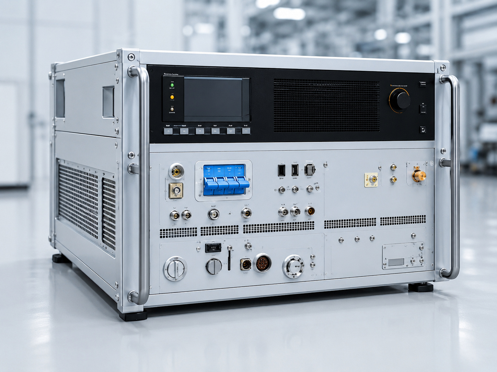

01 · Heat Treatment & Tempering
고주파 열처리·템퍼링
SHAFT, ROTOR-SHAFT, CAM-SHAFT, GEAR, HUB, OUTER RACE, 조향장치, 금형 등 기존 사이트에 축적된 적용 분야를 바탕으로 열처리·템퍼링 공정을 구성합니다. 부품 형상과 목표 품질, 생산 조건을 먼저 검토합니다.
- 표면 경화·국부 가열·템퍼링 공정
- 부품별 코일·지그·이송 구조 설계
- 반복 생산을 위한 조건 관리와 자동화 연계